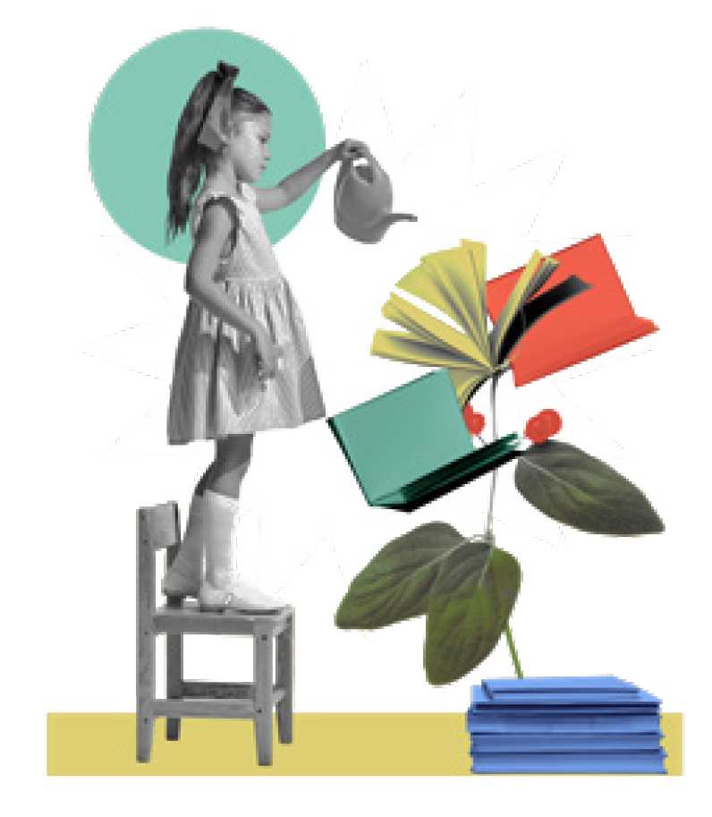
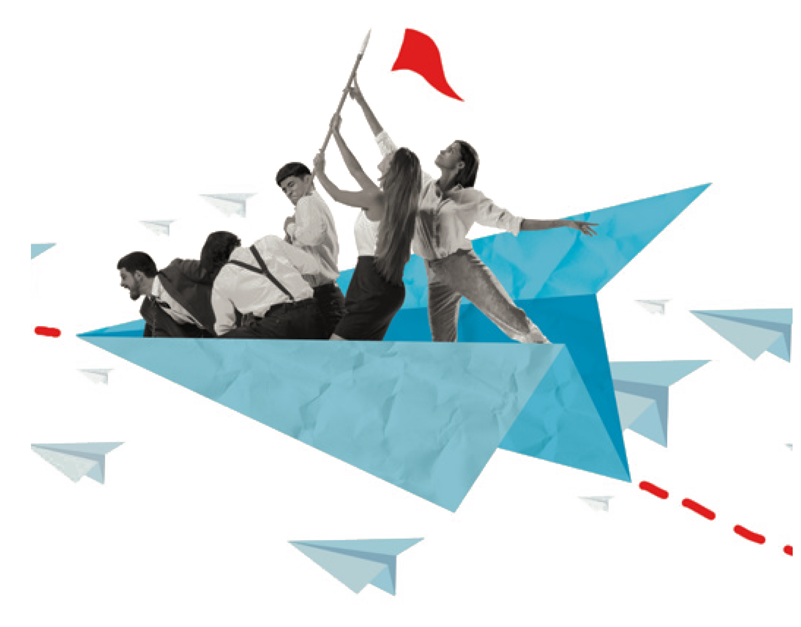
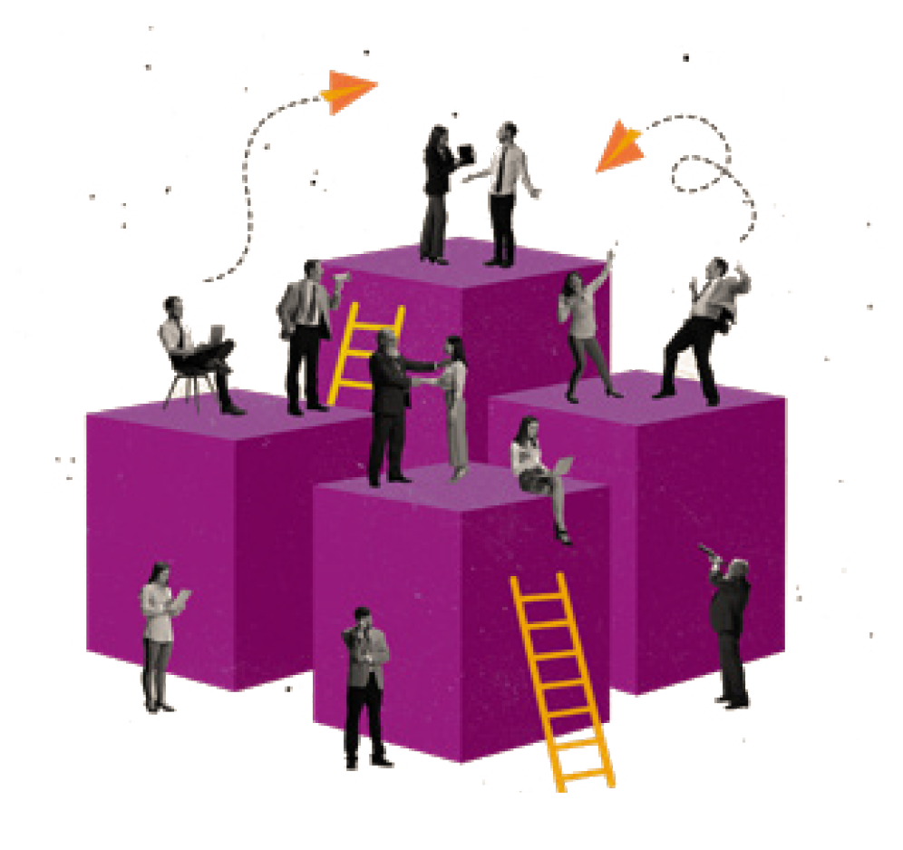

Transformación Social desde el Cuidado
Fortalecemos el tejido social impulsando la generación de conocimiento entre profesionales de la acción social, desde la supervisión, la formación y la sostenibilidad institucional.
📧 info@maipo.es | ☎️ +34 617 920 104
Nuestro propósito
Promover una sociedad más cohesionada, inclusiva y equitativa, reforzando el bienestar de personas, grupos y comunidades a través de profesionales comprometidos con la transformación social.

A quién nos dirigimos
Organizaciones, grupos y colectivos que trabajan en acción social, y a los equipos y profesionales comprometidos con la transformación.
Nuestra misión
Fortalecer el tejido social e impulsar la generación de conocimiento entre profesionales de la acción social como agentes locales de transformación.
Nuestro compromiso
Espacios seguros donde reflexionar, aprender y proponer mejoras, promoviendo una cultura del cuidado en organizaciones y proyectos sociales.
Cómo Trabajamos

Cultivando Saberes
Generamos espacios donde se comparte conocimiento profesional, se reflexiona sobre la praxis y se construye aprendizaje colectivo desde la experiencia.

Acompañamos Procesos
Proporcionamos supervisión profesional continua, reflexión sobre el autocuidado y apoyo para sostenibilidad emocional y institucional.

Generamos Proyectos
Diseñamos e implementamos soluciones personalizadas que fortalecen la capacidad institucional y potencian el impacto social.
Nuestros Servicios
Supervisión Profesional
Espacios de reflexión sobre la praxis y autocuidado para profesionales de la acción social.
- Sesiones bimensuales o mensuales
- Grupos reducidos (4-12 personas)
- Facilitador especializado
- Enfoque reflexivo y seguro
Formación Especializada
Diseño e implementación de procesos formativos ajustados a necesidades específicas.
- Diagnóstico de necesidades
- Talleres y cursos personalizados
- Metodología vivencial
- Evaluación de impacto
Desarrollo Institucional
Acompañamiento en procesos de fortalecimiento organizacional y sostenibilidad.
- Diagnóstico institucional
- Diseño de estrategias
- Implementación acompañada
- Evaluación y ajustes
A Quiénes Nos Dirigimos
Trabajamos con organizaciones sociales que buscan potenciar su impacto y cuidar a sus equipos profesionales.
🏛️ Organizaciones, Grupos y Colectivos
Iniciativas sociales, fundaciones, asociaciones y entidades que buscan fortalecer su capacidad institucional, reflexión profesional y sostenibilidad a largo plazo.
👥 Equipos y Profesionales
De acción social, intervención social, mediación y trabajo comunitario que necesitan espacios seguros de reflexión, supervisión profesional y cuidado emocional.
🤝 Servicios Públicos y Agentes Sociales
Instituciones públicas, administraciones locales y agentes comunitarios que impulsan transformación social desde la cooperación y el trabajo colaborativo.
🌱 Iniciativas Ciudadanas y Movimientos
Proyectos comunitarios, grupos de base y movimientos sociales que buscan tejer comunidad, activar procesos colectivos y construir cambio desde la base.
Preguntas Frecuentes
Resolvemos tus dudas sobre cómo trabajamos y cómo podemos ayudarte.
El proceso de supervisión se estructura en sesiones presenciales o remotas (según necesidad) donde facilitamos reflexión sobre la praxis, se abordan desafíos específicos del equipo y se trabaja el autocuidado profesional. Las sesiones duran 90 minutos y se pueden hacer de forma bimensual o mensual según el ritmo del grupo.
Recomendamos un mínimo de 3 a 6 meses de acompañamiento continuo para ver resultados significativos. Sin embargo, podemos adaptar los tiempos según tu situación específica. Los primeros cambios suelen notarse después de 4-6 sesiones.
Sí, ofrecemos tanto modalidad presencial en Gijón como sesiones remotas por videollamada. Muchas organizaciones de España trabajan con nosotros completamente online. Adaptamos el formato según lo que funcione mejor para tu equipo.
Utilizamos indicadores cualitativos y cuantitativos: mejora en el clima laboral del equipo, reducción de burnout profesional, calidad de las intervenciones, retención de personal, y evaluaciones post-proceso. Realizamos seguimiento continuo y ajustes según los avances.
Los costos varían según el tipo de servicio, número de personas y duración del acompañamiento. La supervisión profesional para grupos oscila entre €600-1.200/mes. La formación especializada y desarrollo institucional se presupuesta según el diagnóstico. Podemos ajustar opciones de pago según necesidad.
Lo primero es una conversación inicial sin compromiso (llamada o presencial) donde escuchamos tu situación, desafíos y objetivos. A partir de ahí, diseñamos una propuesta personalizada de acompañamiento. No hay obligación, solo es conocernos.
Contamos con más de 6 años de experiencia en consultoría y acompañamiento a organizaciones sociales. Hemos trabajado con fundaciones, asociaciones e instituciones públicas en Asturias, España. Disponemos de referencias y casos de éxito que compartimos bajo confidencialidad.
Conectemos
Hablemos sobre tu organización y cómo podemos potenciar tu impacto social.